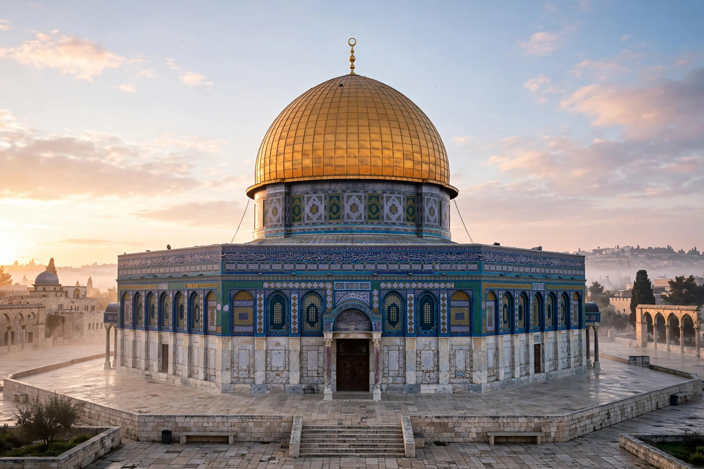

Umayyad Caliphate

The Dome of the Rock in Jerusalem, built under the Umayyad caliph Abd al-Malik
The Umayyad Caliphate (661–750) was the second of the four major caliphates established after the death of Muhammad, and the first hereditary dynasty of Islam. From its capital at Damascus, the Umayyad family ruled an empire stretching from the Iberian Peninsula to the Indus Valley — the largest empire in the world at the time and among the largest in history. Under the Umayyads, Arabic became the language of administration, the first Islamic coinage was struck, and monuments such as the Dome of the Rock in Jerusalem and the Great Mosque of Damascus announced a confident imperial Islam.
Expansion
Mu'awiya I, governor of Syria, emerged from the first Muslim civil war (fitna) as caliph in 661 and made the office hereditary in his son Yazid, whose forces killed Muhammad's grandson Husayn at Karbala (680) — the wound at the heart of the Sunni–Shia split. Umayyad armies took North Africa, crossed into Spain (711), conquered Sindh, and besieged Constantinople twice (674–678, 717–718) without success; their westward advance in Europe was checked in Francia, traditionally at the Battle of Tours (732).
Overthrow
The dynasty's favouritism toward Arab Muslims over non-Arab converts (mawali), and the exclusion of the Prophet's family, fed the Abbasid revolution: in 750 Abu al-Abbas al-Saffah's supporters destroyed the Umayyads at the Battle of the Zab and massacred the family. One survivor, Abd al-Rahman I, escaped to Spain and founded an Umayyad emirate — later caliphate — at Córdoba that endured for nearly three centuries.